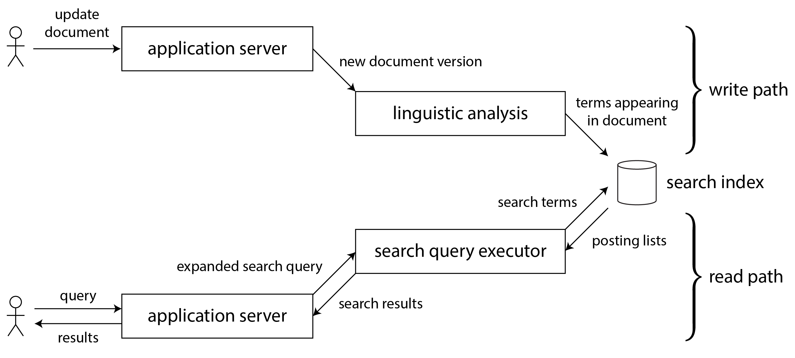
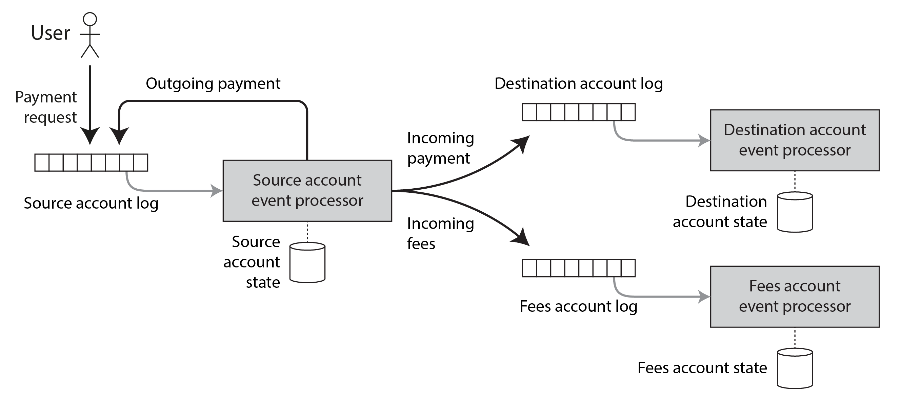

术语表 · 第 13 章 · 课程 13 / 14
流式系统的哲学
这一章没有新机制，它是把前十二章的碎片重新拼成一个整体：你不可能用一个软件解决全部问题，于是你只能组合工具；而组合工具的黏合剂不是分布式事务，是「日志 + 幂等 + 端到端标识」。如果你只能从这一课带走一句话，就是那句——中间层做的去重与校验都是优化，正确性只能由端点保证。
13.1数据集成：为什么「用一个系统全包」是错误的方向
先说清楚这一章的出发点。对于「我想存储一些数据，稍后再把它查出来」这个问题，不存在唯一正确的方案——第 4 章给了你日志结构、B 树、列式存储三种答案，第 6 章给了你单主、多主、无主三种答案，每一种都有自己的代价曲线。软件实现必须选一种具体做法，而意图包办一切的软件几乎注定得到糟糕的实现。
因此真实系统一定是组合出来的：OLTP 库存记录、全文检索、缓存、数据仓库、推荐模型、审计日志、通知服务——每一份都是同一份数据的另一种「表示」。表示越多，集成就越难。这就是这一章要解的那道题。
解法只有一句：把一份数据指定为权威，其余全部作为它的衍生。你必须在设计文档里明确回答三个问题：数据最先写到哪里？每个衍生表示从哪个来源衍生？变更怎么以正确顺序送到每一个该去的地方？
为了满足不同的访问模式，如果同一份数据的副本需要保存在多个存储系统中，你就必须清楚地界定输入和输出：数据最先写到哪里？哪些表示是从哪些来源衍生出来的？怎样才能以正确的格式，把数据送到所有正确的位置？
例如，你可以让数据首先写入作为记录系统的数据库，捕获该数据库中的变更，再按相同顺序把这些变更应用到搜索索引。如果变更数据捕获（CDC）是更新索引的唯一途径，你就可以确信索引完全衍生自记录系统，因而与之保持一致（软件缺陷除外）。
如果能够把所有用户输入都汇入一个系统，由它决定全部写入的顺序，那么只需按相同顺序处理这些写入，就能更容易地衍生出数据的其他表示。……使用变更数据捕获还是事件溯源日志并不是最重要的，真正重要的是先确定一个全序。
「先确定一个全序」这五个字，是这一章全部工程判断的来源。它把「一致性」这个模糊的词翻译成了一个可以检查的结构问题：你的系统里，谁有权决定两个并发写入的先后？如果答案有两个，你就有一个永久不一致的隐患。
对照一下两条路线，其实它们在做同一件事，只是手段不同——一个用锁，一个用日志：
| 维度 | 分布式事务（2PC / XA） | 衍生数据（CDC + 事件日志） |
|---|---|---|
| 如何决定顺序 | 加锁实现互斥 | 按日志位置排序 |
| 如何保证只生效一次 | 原子提交协议 | 确定性重试 + 幂等 |
| 读到的数据是否最新 | 是（严格可串行化） | 默认不是（异步） |
| 单点故障如何传播 | 任一参与者失败即整体中止，故障被放大 | 消费者落后不影响生产者，故障被局限 |
| 跨异构团队/技术的成本 | 需要全局统一的事务协议，现实中不存在 | 一个有序日志 + 幂等写，接口简单 |
最后一行是决定性的。单个存储系统内部做事务是可行的，流处理器内部用事务实现恰好一次也是可行的；但一旦跨越不同团队写的不同技术（从流处理器写进一个分布式 KV 或搜索索引），缺少标准化事务协议这件事就让成本爆炸。而「有序日志 + 幂等消费者」是一个简单得多的抽象，简单到任何团队都能实现。
这里可以给一条底层视角的注解，因为读者的直觉通常在系统调用这一层。XA 这类协议在实现上要求参与者在提交阶段持有资源锁、保持连接与事务上下文，期间任何一次 write() 阻塞、任何一次 socket 超时都会延长锁持有时间。于是「协调者等所有参与者回应」这个模式，把最慢那个参与者的尾延迟乘到了全系统。事件日志把这个耦合断开了：生产者的 write() 只追加到本地/近端日志就返回，消费者的慢和死由消费延迟（lag）这个指标吸收，不反向阻塞上游。这不是「更先进」，是把耦合换成了可观测的滞后。
13.2全序的极限：为什么你不能「所有事件排一条队」
既然全序这么好，为什么不干脆把全世界的写入排成一条日志？因为单条全序日志的吞吐上限就是单个领导者节点的吞吐上限。现实里有四种力量会把它撑破，每一种都在真实系统里出现过：
- 吞吐超过单机。日志必须分片，一旦分片，「分片 A 的事件与分片 B 的事件谁先」就不再明确。第 10 章讲过，决定全序的问题形式上叫全序广播，等价于共识；而多数共识算法假设单节点足以处理整个流。
- 地理分布。为了容忍整个数据中心离线，你在每个区域各设一个领导者。跨区域同步协调的延迟是光速决定的，于是两个数据中心产生的事件之间没有确定顺序。
- 微服务。每项服务连同它的持久状态作为独立单元部署，不共享状态。两个服务产生的事件之间没有确定顺序——这不是疏忽，是组织可伸缩性的代价。
- 客户端状态。用户输入后立即更新界面，不等服务器确认，离线也能继续用。客户端与服务器很可能以不同顺序看到同一批事件。
所以「全序」不是一个可以随便承诺的性质。真正的问题变成：哪些事件之间真的需要顺序？
大部分情况很温和：同一个对象的多次更新，只要把该对象 ID 的所有更新路由到同一个分片，全序就免费拿到了。这就是按 key 分区的全部意义。麻烦的是跨对象的因果依赖，书里那个例子值得记住：两个人刚分手，A 先把 B 移出好友列表，然后向剩下的好友发消息抱怨 B。用户的本意是 B 看不到这条消息。但如果好友关系状态和消息存在不同位置，「解除好友」与「发送消息」之间的顺序依赖就丢了，通知服务可能先处理「发消息」再处理「解除好友」，于是 B 收到了本该看不到的通知。
注意这个 bug 的形状：它不是数据错了，数据全对；它是一次连接用错了时间点的状态——也就是 12.5 节的「连接的时间依赖性」。而通知恰恰就是「消息」与「好友列表」的连接结果。
书里给了三个可能的起点，都对，也都不完整：逻辑时钟（无需协调即可提供全序，但接收方仍需处理乱序到达，且要传额外元数据）；用事件 ID 记录「用户做决定前看到的状态」（后续事件引用这个 ID 来表达因果）；冲突解决算法（适合维护状态，但对「发通知」这种有外部副作用的操作无能为力——通知发出去了就收不回）。
评审里遇到这类问题，能写下来的最诚实的一句话是：「我们接受跨聚合根的因果依赖丢失，影响面是通知类副作用；状态类衍生有幂等与重放兜底。」说清影响面和兜底手段，比声称「我们保证因果一致」有用得多。
13.3分拆数据库：把「索引维护」抽出产品之外
这一节是全书最漂亮的一次视角切换。想一件事：你在关系数据库里执行 CREATE INDEX 时，数据库做了什么？扫描表的一致性快照，取出要索引的字段值，排序，写出索引；然后处理拍摄快照之后积压的写入；此后每个事务写入该表，都要顺带更新索引。
再把这件事和「设置一个新的追随者副本」比一比：取快照、追日志、此后持续应用变更。再和「为 CDC 引导初始快照」比一比：取一致性快照、记下对应偏移量、追变更。三者是同一个算法。
结论就出来了：批处理器和流处理器，本质上是数据库里「触发器、存储过程、物化视图维护算法」的独立实现；而衍生数据系统，本质上是数据库里各种索引的独立实现。只是它们不在一个产品里，跑在不同机器上，由不同团队维护。

由此引出两个方向，名字都很好记，也都在评审里出现过：
- 联合数据库（federated database / polystore）：统一读。给多个底层存储套一个统一查询接口。它延续关系模型的传统，实现非常复杂，而且解决不了写入同步。
- 分拆数据库（unbundling）：统一写。让存储系统之间通过 CDC 与事件日志可靠连接，把「索引维护」这个能力从数据库产品里拆出来，跨技术同步写入。它延续 Unix 的传统：小工具各做一件事，用统一低层接口通信，再用更高层语言组合。
分拆的最大优势是松散耦合，而且是两层的：系统层面，某个消费者慢或死，日志缓冲消息，生产者与其他消费者不受影响，故障消费者修好后追赶，不漏数据；人员层面，不同团队可以独立开发、改进、维护各自的组件，只通过事件日志这个接口交互。
但这一章同时给了一句必要的冷水，评审里引用它很有效：如果有一种技术能满足你的全部需求，就用它，不要自己拼。单一集成产品在它针对的工作负载上，往往比用应用代码拼起来的系统性能更好、更可预测；为不需要的规模构建系统只是徒劳，还会把你锁进僵化的设计——那就是过早优化。分拆追求的是广度而不是深度，它不打算在特定负载上赢过单个数据库。
13.4端到端原则：中间层的保证都是优化
这一节是全章的核心，也是「恰好一次到底保证什么」这个问题的终点。
先看一个看似无懈可击的失败。客户端与数据库之间有一条 TCP 连接，事务与连接绑定（数据库靠「同一连接」判断多条查询属于同一事务）。客户端发出 COMMIT，还没收到回应，网络中断、连接超时。它无从知道事务到底提交了还是中止了。它重连重试——但这个重试已经超出 TCP 重复抑制的范围，因为 TCP 的序列号只在那条连接内有效。如果事务不是幂等的（比如「余额加 11 再减 11」），结果可能是转了 22 块。
再往上一层还有一次失败：最终用户的浏览器通过 HTTP POST 提交指令，蜂窝网络很差，POST 发出去了，响应没回来。用户看到错误，手动重试，浏览器问「确定要再次提交此表单吗」，用户点确定——因为他本来就希望操作发生。在 Web 服务器看来这是另一次请求，在数据库看来是另一个事务。通常的去重机制全部失效。
抑制重复事务的情形，只是一个更普遍原则的例子。这个原则称为端到端原则（end-to-end argument），由 Saltzer、Reed 和 Clark 于 1984 年提出：
只有借助位于通信系统两端的应用所掌握的知识与提供的协助，所讨论的功能才能得到完整、正确的实现。因此，不可能把这一功能作为通信系统本身的一项功能来提供。（有时，通信系统提供的不完整版本可以用来提升性能。）
把它翻译成工程语言：TCP 去重、数据库事务、流处理器的「恰好一次」，单拎出来都不足以防止重复。它们降低重复发生的概率，但完整的去重必须由端点完成。做法是让一个标识符贯穿全链路：客户端生成 UUID，或对所有表单字段算哈希，作为隐藏字段随请求提交；服务端把它一路带到数据库，在 request_id 上建唯一约束。第二次提交会因唯一约束冲突而使事务中止。
这条链路有个容易被忽略的好处：requests 表本身就是一个事件日志。账户余额的更新其实不必与插入事件在同一事务里，因为余额只是冗余状态，可以由下游消费者从请求事件衍生——只要事件被恰好一次处理，而这一点同样由请求 ID 保证。
端到端原则还适用于两件评审里经常含糊的事：
- 完整性校验。以太网、TCP、TLS 的校验和能发现链路传输中的损坏，但发现不了两端收发软件里的缺陷，也发现不了磁盘静默损坏。要覆盖所有来源，就得端到端校验和——在应用层算、在应用层验。
- 加密。WiFi 密码防不住互联网别处的攻击者，TLS 防不住服务器本身被入侵。只有端到端加密与认证能覆盖全部威胁。
低层机制仍然有用，因为它们让高层出问题的概率变小。但请记住那句限定：低层可靠性功能不足以提供端到端正确性。这句话可以直接抄进评审文档，用来回应「我们已经有 TCP/事务/框架的恰好一次了」这类说法。
13.5强约束都要付协调成本，而多数业务允许「先做后道歉」
唯一性约束（用户名、邮箱、座位、请求 ID）在分布式环境里需要共识：多个并发请求要抢占同一个值，系统必须决定接受哪一个、拒绝其余。最常见的做法是让单个节点当领导者决定全部，或者用 Raft 在领导者失效时安全换届。可以通过按值的哈希分片来横向扩展——只要保证相同值的请求进同一分片。但异步多主复制不适用：不同领导者可能并发接受冲突写入，值就不再唯一。想立刻拒绝违规写入，同步协调不可避免。
基于日志的替代方案很优雅：流处理器单线程顺序消费一个日志分片，所以如果按「必须唯一的值」分片，它能毫无歧义地判断哪次抢占最先出现在日志里。用户名注册的算法就三步——请求按用户名哈希进分片；处理器顺序读、在本地记录已占用名称、发出成功或拒绝事件；客户端观察输出流等自己那条结果。这和用共享日志实现共识是同一个构造。
但这一节真正的智慧在后面：许多业务需求其实允许违反那些看起来是硬约束的规则。
库存超卖，可以补货、道歉、给折扣；而且即便没有超卖，叉车碾坏几件货你也要走道歉流程——所以道歉工作流本来就必须存在，硬约束未必有必要。航空公司超卖因为预计有人误机；酒店超卖因为预计有人取消；即便没有超卖，恶劣天气取消航班也要道歉与补偿。银行允许透支然后收透支费，只要限制每日提款总额，风险就有上界。跨组织的结算系统里不一致不可避免，因此必须有修正机制——银行间支付结算就是例子。
这种用于纠正错误的变更叫补偿性事务（compensating transaction）。道歉的代价各不相同，但往往很低：已发出的邮件收不回，但可以再发一封更正；信用卡多扣一次，退款即可，代价是手续费加一次投诉；ATM 吐出的现金确实拿不回，但可以催收。
道歉的代价能否接受，是业务决策，不是技术决策。这句话在评审里非常有杀伤力，因为它把「要不要上分布式事务」从一个技术品味问题变成了一个可以算账的问题：为一条约束付出全局协调成本，还是为偶发违反付出道歉成本？
及时性（timeliness）是指确保用户观察到系统的最新状态。……不过，这种不一致只是暂时的，只需等待并重试，最终便会消失。
完整性（integrity）是指没有损坏：既不丢失数据，也没有相互矛盾或虚假的数据。尤其是，如果某个衍生数据集作为底层数据之上的视图来维护，衍生过程必须正确。……如果完整性遭到破坏，不一致就是永久的：大多数情况下，等待和重试无法修复数据库损坏，必须明确进行检查和修复。
用一句口号来说：违反及时性叫「最终一致」，违反完整性则叫「永远不一致」。
这一段值得单独记下来，因为它给了你一个两维坐标轴，可以把任何「一致性」讨论拆开：及时性是可以等掉的（读到旧数据，等一会儿重试就好）；完整性是等不掉的（索引漏了记录、资金凭空消失，重试一万次也不会自愈）。
而流式系统有一个很有意思的性质：它把这两者解耦了。异步处理事件流时，除非你显式让消费者等到消息到达才返回，否则没有及时性保证；但完整性反而是它的核心——恰好一次语义就是维护完整性的机制，事件丢失或生效两次都会破坏完整性。
于是就有了那个结论性的观察：不引入协调，也能提供强完整性保证，只是要放弃及时性。这类系统叫「避免协调（coordination-avoiding）的数据系统」：可以采用多主配置分布在多个数据中心、区域之间异步复制，任一数据中心都能独立运行；它只提供较弱的及时性（没有协调就不可能有线性一致性），但完整性依然强。
这里有个平衡视角值得抄进文档：协调与约束减少「因不一致而道歉」的次数，却可能降低性能与可用性，从而增加「因服务中断而道歉」的次数。道歉次数不可能降到零，你要找的是那个平衡点——既不会出现太多不一致，也不会遇到太多可用性问题。

这个例子的机制值得完整走一遍，因为它是「不用分布式事务也能做到原子性」的样板。客户端给转账请求一个唯一 ID，按源账户 ID 哈希追加到日志分片。流处理器读请求日志，维护「源账户状态 + 已处理请求 ID」的本地库（完全衍生自日志）。遇到没见过的请求 ID，就检查余额：够，则本地预留金额，并向源账户分片发出账事件、向目标账户分片发入账事件、向手续费账户分片发入账事件，三个事件都带原请求 ID。出账事件绕一圈回到源账户处理器，处理器凭请求 ID 认出这是已预留的那笔，执行付款，重复事件按 ID 忽略。目标与手续费账户各自的分片由独立任务消费，收到入账事件后更新本地状态，同样按请求 ID 去重。
如果源账户处理器在处理中途崩溃呢？崩溃前输出消息可能已发也可能未发。恢复后会重处理同一请求（至少一次语义），因为处理器是确定的，它仍会作出相同决定，于是发出同一批带相同请求 ID 的输出。下游按 ID 去重，重复无害。
所以那句总结是可以背的：这个系统的原子性不来自任何事务，而来自「把初始请求事件写入源账户日志」这一个原子操作。一旦那条事件进了日志，所有下游事件最终都会写入——可能延迟，可能有重复，但一定出现。
13.6信任但验证：审计是架构的一部分
前面所有讨论都建立在一组假设上：某些事会出错，另一些不会。这叫系统模型。传统系统模型把故障当二元的——假设可能发生 A，绝不会发生 B。现实是概率的：真正的问题是「违反假设的情况是否频繁到我们会在实践中遇到」。
而且软件缺陷是另一类风险，低层的校验和抓不到它。书里举了两个很重的例子：某些版本的 MySQL 未能正确维护唯一性约束；PostgreSQL 的可串行化隔离级别过去也曾出现写偏差异常。这两个都是经过多年实战检验的稳健数据库——不够成熟的软件只会更糟。
所以「信任但验证」在架构上具体就是三件事：
- 真正读回来检查。HDFS 和 S3 不完全信任磁盘：后台进程不断回读文件、与其他副本比较、把文件在磁盘间搬移，以降低静默损坏风险。想确认数据还在，就必须真的读并检查。
- 定期演练恢复。不时尝试从备份恢复——否则你可能直到数据已经丢失、为时已晚，才发现备份根本不能用。
- 为可审计性而设计。事件溯源的系统在这件事上有结构性优势：用户输入是不可变事件，所有状态更新由它衍生，衍生过程确定且可重复。于是「用同一版本代码处理同一份日志，得到相同状态」这件事本身成了一个检查项——你可以重跑，甚至并行跑一条冗余衍生流程，比对结果。
这也解释了为什么「不可变日志 + 衍生视图」比「直接改状态」更容易推出正确系统：改状态是一次性的、不可重现的，你只能看到结果；而日志保留了你重放的能力，重放就能验证。「时间旅行式调试」不是花哨功能，它是完整性检查的实现方式。
区块链在这套语境里的位置也就清楚了：它是带密码学一致性检查的共享仅追加日志，交易是事件，智能合约基本就是流处理器，共识保证所有节点对同一事件序列达成一致。与第 10 章的共识协议不同的是它有拜占庭容错：即便某些参与节点的数据已经损坏，系统仍能工作，因为副本不断互相检查完整性。对大多数应用来说它的开销太高、不实用，但其中的工具（默克尔树证明某条记录存在于某个数据集、证书透明性用密码学验证的仅追加日志检查 TLS 证书）在更轻量的场景里已经可用。
13.7反例：跨异构系统的分布式事务
反例
一笔下单要同时改三个系统：订单库（PostgreSQL）扣库存、钱包服务（MySQL）扣余额、积分服务（另一个团队的 MongoDB）加积分。团队决定「保证强一致」，于是引入 XA：三个资源管理器都支持两阶段提交，由一个协调者统一提交。同步调用，全部成功才返回下单成功。
为了让「读到最新」，下单成功后立刻同步刷新缓存；查询接口一律读主库。
① 锁持有时间被最慢者决定。2PC 的准备阶段结束后，所有参与者都要持有锁直到提交。MongoDB 那边一次慢查询把锁持有时间从 20ms 拉到 800ms，订单库上同一行库存的并发下单全部排队，尾延迟直接塌陷。这不是实现 bug，是协议结构决定的。
② 协调者成为可用性单点。协调者在「所有参与者已准备、尚未发出提交决定」的窗口里崩溃，参与者只能挂着锁等——这就是 2PC 的阻塞问题。恢复后日志丢了，谁也不知道该提交还是回滚。
③ 跨团队的技术边界让故障域合并。积分服务发一次版重启，下单全挂。原本「积分加不上就补发」这种可以道歉的业务，被硬拽成了核心链路的一部分。
④ 而且它并没有真的解决问题。用户提交订单的 HTTP 请求超时后仍会重试，两个不同的下单请求照样会产生两笔订单——端到端的那一层重复，2PC 完全管不着。
改法：把「决定顺序」收敛到一处。订单库是唯一写入点，下单请求带客户端生成的 request_id，在订单表上建唯一约束——这一条就解决了端到端重复。库存扣减作为同库事务的一部分（同库事务是可行的，别把它也拆掉）。钱包与积分改成消费订单事件：钱包用 request_id 做幂等键，积分服务落后几分钟完全没关系，它只需要最终把积分补上。查询路径读主库只用于「刚下单的用户看自己的订单」（读己之写），其余查询读副本。
关键是把「必须同步的部分」压到最小：同一数据库内的一行库存 + 一行订单。其余全部异步、幂等、可重放。再加一条对账：每天比对订单总额、钱包扣款总额、积分发放总额，差异超阈值告警。跨组织或跨团队的写入不一致不可能为零，所以修正机制是设计的一部分，不是补救措施。
13.8面试里怎么答
「你怎么保证跨多个服务的数据一致性？」
「先分清是哪一种一致性。及时性可以等掉，完整性等不掉——所以我的底线是完整性，及时性按业务定。
做法是把写入收敛成单点：订单库是唯一权威，用客户端生成的 request_id 加唯一约束做端到端去重，这条约束解决的是 HTTP 重试那一层的重复，事务和 TCP 都管不了。其余系统全部作为衍生，消费变更日志，用 request_id 或版本号做幂等。
我不上 XA。原因是 2PC 在准备阶段要全程持锁，锁持有时间由最慢的参与者决定；协调者在提交决定发出前崩溃就会让参与者一直阻塞。跨团队、跨技术栈时这几乎必然发生。
代价我明确接受：衍生系统会滞后几秒到几分钟，这期间读到旧值。对『刚下单的用户看自己的订单』这一条我用读主库兜住读己之写，其余查询读副本。再加每日对账，差异超阈值告警——因为跨系统的完整性只能靠检查来确认，不能靠假设。」
练习单选与自述
你的团队用「客户端生成 UUID + 数据库唯一约束」来防止重复下单。这个方案之所以有效，最根本的原因是：
某衍生索引偶尔会漏掉少量记录，但几秒后重试查询就能看到正确结果。按这一章的划分，这属于：
不看上文，用三句话说清：为什么「用一个分布式事务把所有系统串起来」在跨团队场景里几乎总是错的方向？
① 结构性的延迟放大：2PC 在准备阶段让所有参与者全程持锁，锁持有时间由最慢的那个参与者决定，尾延迟被乘到全链路；协调者在发出提交决定前崩溃还会让参与者阻塞等待，这是协议本身的问题，不是实现问题。
② 故障域被合并：任何一个参与者不可用，整体中止。原本可以「道歉 + 补偿」的业务（加积分、发通知）被硬拽进核心链路，可用性从「各自可用」退化成「全有或全无」。
③ 它解决不了真正的问题：跨团队异构技术缺少标准化事务协议，集成成本极高；而且端到端重复（用户重试、HTTP 超时）根本不在事务的覆盖范围内。正确方向是有序日志 + 幂等消费者 + 端到端请求 ID + 对账，把同步协调压缩到真正需要的那一小块。
小结四句话
- 组合工具的前提是先确定一个全序。谁有权决定两个并发写入的先后，只能有一个答案；多一个答案就多一个永久不一致的隐患。
- 全序有物理上限。吞吐、地理分布、微服务边界、客户端状态都会打破它。所以问题不是「如何保证全局有序」，而是「哪些事件之间真的需要有序」。
- 中间层的保证都是优化。TCP 去重、事务、框架的恰好一次都降低概率，端到端正确性只能由端点用贯穿全链路的标识符保证。
- 完整性靠检查，不靠假设。及时性可以等掉，完整性等不掉；因此审计、对账、重放验证是架构的一部分，不是运维的额外工作。
贴进架构评审文档的话：「orders 库是唯一写入权威，其余表示（搜索索引、钱包、积分、数仓）全部作为衍生，通过变更日志消费，不设第二写入路径。端到端去重依赖客户端生成的 request_id 与 orders 表上的唯一约束，覆盖 HTTP 重试与连接超时两类重复；TTL 与分区清理策略见附录。我们显式放弃跨系统的及时性（衍生滞后 P99 约 30 秒，consumer_lag 指标告警阈值 60 秒），但保持完整性：每个消费者幂等且可重放，每日对账任务比对订单总额与钱包扣款总额，差异超 0.01% 即告警并暂停自动结算。不使用 XA/2PC，原因是准备阶段的锁持有时间由最慢参与者决定且协调者崩溃会阻塞参与者。」
一手资源
第 13 章 流式系统的哲学（中文全译） — 必读的是「数据库的端到端原则」和「及时性与完整性」两节。前者给出了恰好一次为什么必须由端点实现的完整论证；后者那句「违反及时性叫最终一致，违反完整性则叫永远不一致」，是你在评审里拆分一致性讨论时最省力的一把刀。
Vonng/ddia（中文译本仓库） — 想要对照英文原词（timeliness / integrity / coordination-avoiding）时看这里。
随时问我
把你系统里那条「同步调用三个服务才算下单成功」的链路发我。我们逐跳标出：哪一跳失败可以道歉、哪一跳失败必须回滚、以及那笔钱在两跳之间消失的时间窗有多长。